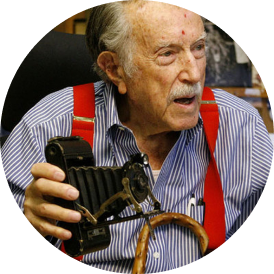
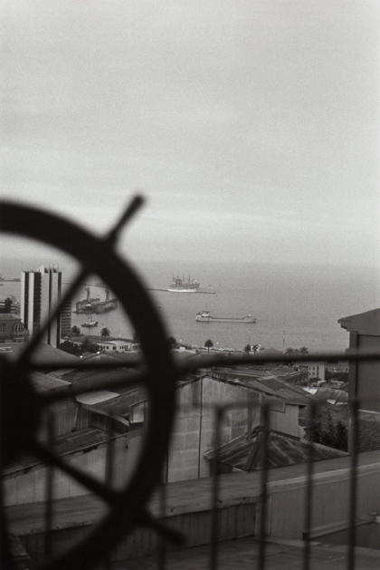
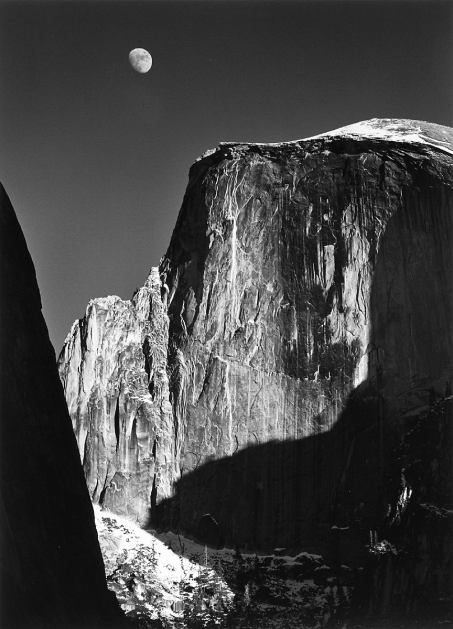

Julius Shulman
Fotografia de Arquitetura
JULIUS SHULMAN FOI UM FOTÓGRAFO DE ARQUITETURA AMERICANO. A FOTOGRAFIA DE SHULMAN DIFUNDIU A ESTÉTICA DA ARQUITETURA MODERNA DE MEADOS DO SÉCULO DA CALIFÓRNIA EM TODO O MUNDO.


Françoise Nuñez
Fotografia Documental
NASCIDA EM TOULOUSE EM 1957, NUÑEZ VEIO DE UMA FAMÍLIA ESPANHOLA. COMEÇOU SUA CARREIRA COMO FOTÓGRAFA EM 1975, DEPOIS DE APRENDER A IMPRIMIR EM PRETO E BRANCO NO ESTÚDIO DE JEAN DIEUZAIDE.

Ansel Adams
Fotografia de Paisagem
ANSEL EASTON ADAMS FOI UM FOTÓGRAFO DE PAISAGENS E AMBIENTALISTA AMERICANO CONHECIDO POR SUAS IMAGENS EM PRETO E BRANCO DO OESTE AMERICANO.